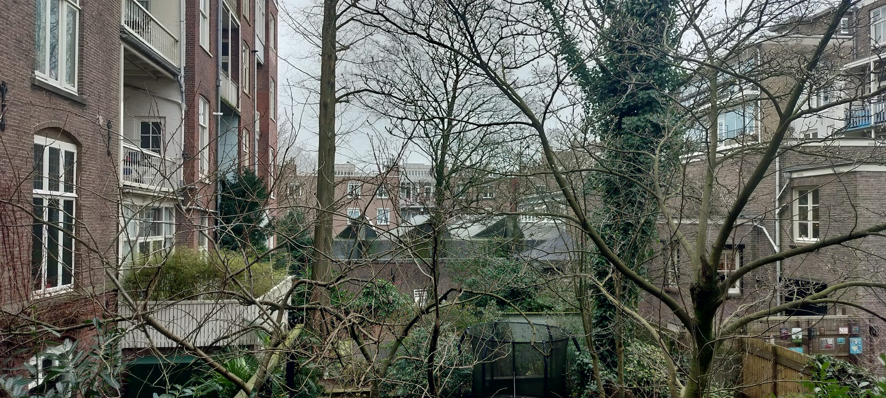
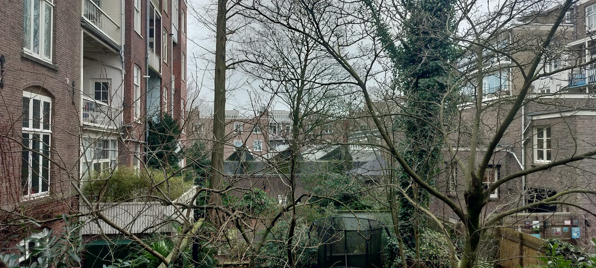
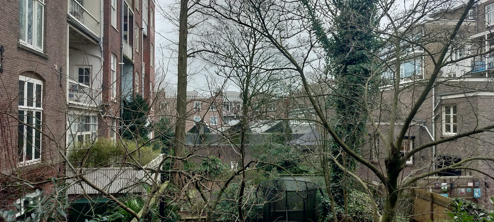
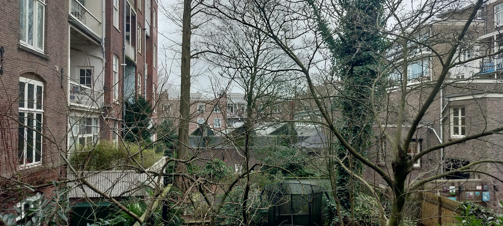

Amsterdam heeft meer te bieden dan alleen drukte. Op onze site delen we info over verschillende moestuinplekken en onze persoonlijke favorieten. Leer hoe mensen hier midden in de stad hun eigen groenten en kruiden laten groeien.
Ontdek met ons de eenvoudige vreugde van stadslandbouw en leer meer over de gemeenschap die hier omheen bloeit. Verken Amsterdamse moestuinen en deel in de vreugde van zelfvoorzienend zijn in de stad!
Bekijk onze kaart om drie coole moestuinplekken in Amsterdam te vinden: Vink Schooltuin, Moestuin Slijpestijn, en Tuinvereniging Kostverloren. Op de kaart zie je waar deze groene plekjes verstopt zitten, midden in de stad. Geniet van de natuur en ontmoet lokale tuiniers!
Wil je nog meer groene plekken ontdekken? Scroll dan onder de kaart voor een lijst met alle toffe moestuinlocaties in Amsterdam. Zo blijf je lekker op ontdekkingstocht in de stad!
De Vink Schooltuin in Amsterdam is een speciale plek waar kinderen de kans krijgen om de magie van de natuur te ervaren. Het is als een geheime tuin midden in de stad, waar jonge ontdekkers leren over de cyclus van planten, van zaaien tot oogsten. Hier worden kinderen niet alleen omringd door groenten en bloemen, maar ook door de waardevolle lessen van de natuur.
In de Vink Schooltuin draait het niet alleen om educatie, maar ook om samenwerken en duurzaamheid. Kinderen ontdekken niet alleen hoe ze voor planten moeten zorgen, maar ook hoe ze samen verantwoordelijkheid kunnen nemen voor de aarde. Het is een plek waar vriendschappen bloeien, waar kinderen hun handen vies maken terwijl ze leren over het belang van groen en waar elke dag nieuwe avonturen wachten tussen de groene bladeren. Kortom, de Vink Schooltuin is een bijzondere plek waar de eenvoudige schoonheid van de natuur samengaat met waardevolle lessen voor jonge geesten.
Moestuin Slijpestijn is een heerlijke plek waar natuur en gemeenschap samenkomen in Amsterdam. Deze moestuin biedt een oase van rust te midden van het stadse leven. Hier leren mensen niet alleen hoe ze groenten en kruiden kunnen kweken, maar ervaren ze ook de kracht van samenwerking en het plezier van delen.
De sfeer in Moestuin Slijpestijn is ontspannen en gastvrij. Of je nu een doorgewinterde tuinier bent of net begint met het verbouwen van je eigen groenten, iedereen vindt hier een plekje. De tuin staat open voor gemeenschapsbijeenkomsten en activiteiten, waardoor het niet alleen een plek is om te tuinieren, maar ook om je buren te ontmoeten en nieuwe vrienden te maken.

In het midden van de stad is er een geheime schat genaamd Tuinvereniging Kostverloren. Ook al ben ik er zelf geen lid van, heb ik wel gezien dat het er geweldig uitziet. De tuin iseb gevuld met kleurrijke bloemen, mooie groene gazons en leuke paadjes om te verkennen.
Wat de tuin echt bijzonder maakt, is hoe mooi het eruitziet. Overal waar je kijkt, zie je prachtige bloemen en groen. Het lijkt wel alsof elk stukje van de tuin met zorg is ontworpen, waardoor het een betoverende plek is om te zijn.
Hoewel ik niet veel weet over de mensen die er tuinieren, kan ik me voorstellen dat ze niet alleen genieten van de mooie bloemen, maar ook van de rust en stilte van hun eigen stukje tuin. Het is een plek waar je even kunt ontsnappen aan de drukte van de stad en gewoon kunt genieten van de rust.
Ontdek de ultieme groene schat van Amsterdam - dé beste moestuin die de stad te bieden heeft. Hier delen we waarom deze plek zo bijzonder is, van de variëteit aan gewassen tot de gemeenschapsgeest die er heerst. Laat je inspireren om deze groene oase te bezoeken en te genieten van alles wat de beste moestuin van Amsterdam te bieden heeft.